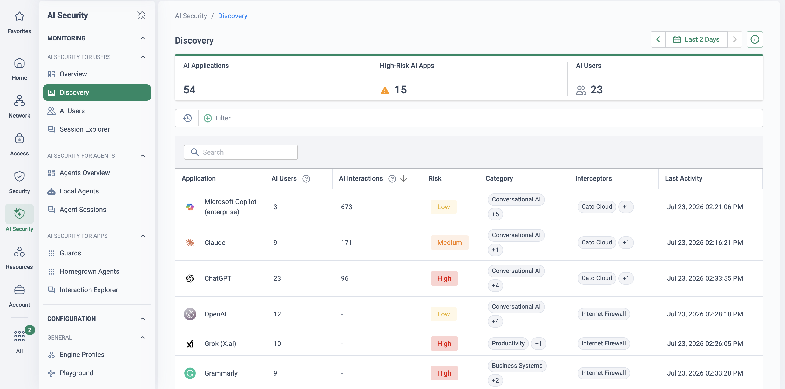
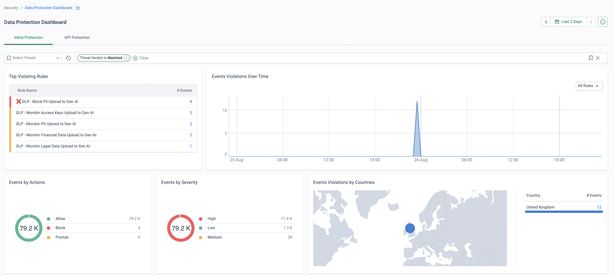
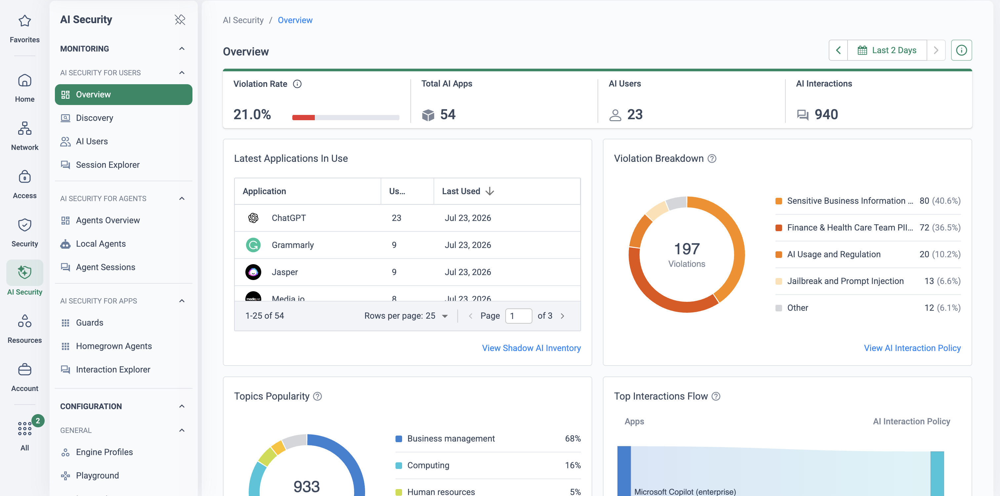
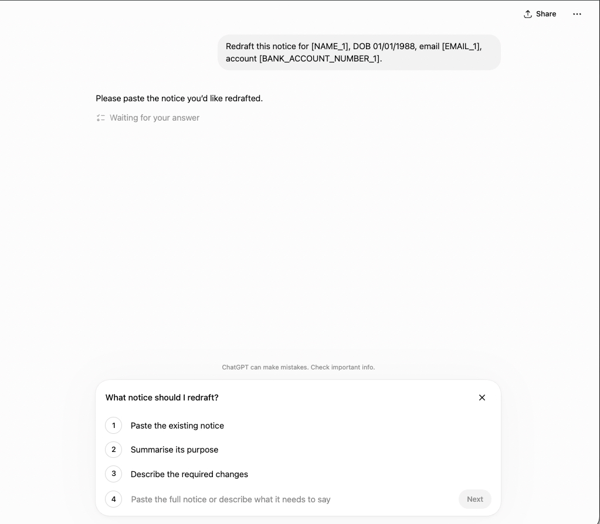

Enable GenAI without waiving privilege
Client confidentiality and legal professional privilege are the profession's foundations. A prompt that carries client-identifying facts to a public model puts both at risk: at minimum it is a disclosure of confidential information to a third party the firm has not assessed or contracted with; at the extreme, feeding privileged material into an open tool can undermine the confidentiality that privilege depends on. The regulator has said so plainly — the SRA's Risk Outlook on AI in the legal market singles out staff entering client details into public tools such as ChatGPT, and confidential data being exposed when it is passed to an AI provider, and stresses that the firm remains responsible for the outcome whoever (or whatever) produced it.
The instinctive response — ban GenAI — fails twice over. It does not stop use; it pushes it onto personal accounts and devices where the firm has no visibility at all. And it hands a recruitment and productivity edge to the firms that found a safer answer. The objective is the harder middle path: let fee-earners use AI, see exactly how they use it on which matters, redact what must not leave, and keep the evidence — scoped per client, because no two clients' terms are the same.
The underlying platform capability is documented in GenAI Security for End Users, and the no-cost discovery engagement that seeds it in the GenAI Visibility Assessment. This page does not repeat them — it covers what privilege and outside-counsel guidelines demand of that capability, and how the controls map to a firm's ethical walls.
Why a firm-wide AI policy isn't enough
The difficulty for a law firm is not simply "is GenAI risky" — it is that the risk lives in the content of individual prompts, and the rules differ client by client. Four pressures collide:
Shadow AI in drafting & research
Fee-earners reach for GenAI to produce a first draft, summarise a bundle, or research a point of law — quietly, whether or not a policy exists. The productivity pull is real, so the behaviour persists; the firm's only question is whether it can see it.
The prompt as disclosure
A prompt that names a client, a counterparty or the facts of a matter transfers confidential information to a model outside the firm's control. Confidentiality is breached the moment it is sent; where the material is privileged, its protection can be jeopardised too.
Per-client AI clauses
Outside-counsel guidelines increasingly set AI terms — some clients permit tools with safeguards, some require notice, some forbid AI on their matters entirely. A single firm-wide switch cannot honour conflicting terms; policy has to be scoped to the group or matter, not the firm.
Evidencing governance to clients
Client security reviews and the regulator expect the firm to show which AI is used and how it is controlled. "We asked people not to" is not evidence. Without an audit trail, an AI clause in an engagement letter is a promise the firm cannot substantiate.
Which AI tools are in use across the firm this week, and by whom? Do any of your clients' outside-counsel guidelines restrict AI on their matters — and would you know if a fee-earner breached one? If a client asked for an AI-usage report on their matter tomorrow, who in the firm could produce it?
Where this sits in the Cato SASE platform
- Fee-earners' prompts already cross a Cato PoP — office behind a Socket, laptops on the Cato Client.
- The User Interaction Policy redacts client identifiers per IdP group, mirroring the firm's ethical walls.
- The sanctioned assistant answers with client identifiers masked; a restricted matter team is blocked.
- Every redacted, monitored or blocked interaction is exportable as outside-counsel evidence.
Redact at the prompt, scope by the matter
Because fee-earners' traffic already crosses a Cato PoP, the firm does not deploy anything on the endpoint to gain control. The User Interaction Policy inspects each AI chat prompt in real time as it leaves the firm and enforces a decision per interaction: Monitor (proceed and log), Anonymize and Monitor (mask sensitive values, then let the prompt through), Anonymize and Block, or Block (nothing reaches the model). Each rule is scoped by a source — users or IdP groups — an AI application set, an engine profile that decides what counts as sensitive, and an optional notification that tells the fee-earner why. Because the source is an IdP group, a client's restricted matter team can carry its own rule: per-client scoping via IdP groups mirrors the firm's ethical walls, so one client's "no AI" clause and another's "AI with redaction" can both be true at the same time.
See the shadow estate first
Shadow AI Discovery classifies the AI tools fee-earners already use — passively, without reading prompt content — so the conversation starts from fact, not assumption.
Redact, don't just refuse
Client identifiers are masked and the prompt still gets an answer — fee-earners keep the productivity, the confidential facts never leave the firm, and no one is pushed to a personal account.
Ethical walls, applied to AI
Rules scoped to IdP groups let a restricted client team carry its own AI stance — block, redact or monitor — so conflicting outside-counsel terms coexist under one policy.
Evidence for the client review
Every monitored, redacted and blocked interaction is attributed and exportable — the audit trail that turns an AI clause in an engagement letter into something the firm can prove.
Discover → understand → govern → prove
The capability is one platform, but for a law firm it lands in four stages — each mapping to an existing library page you can pick up next. Start with visibility; never lead with a block.
| Stage | What it delivers for the firm | Where it lives |
|---|---|---|
| 1 · Discover | Which AI tools fee-earners already use — shadow-AI discovery classifies apps and risk posture passively, without inspecting prompt content. Run this before proposing any control. | Start with the no-cost GenAI Visibility Assessment |
| 2 · Understand | Per-user and per-department AI usage on the AI Security dashboards and AI Users page — who uses which tools, how heavily, and where the risk concentrates. | AI Security Overview & AI Users — see GenAI Security for End Users |
| 3 · Govern | The User Interaction Policy redacts client identifiers, monitors or blocks — scoped per IdP group so per-client rules mirror the firm's ethical walls. DLP's recommended Legal profile backs it for uploads. | Ethical-wall design in Client Confidentiality & Ethical Walls |
| 4 · Prove | The GenAI report and AI events become the client-facing AI-governance evidence — per-group usage you can hand to an outside-counsel security review or a regulator. | GenAI Report & Events export |
TLS Inspection must be enabled at account level for the User Interaction Policy to inspect AI prompts, and its rules take precedence over TLS bypass rules. The DLP backstop uses Cato's recommended profiles for the Generative AI Tools application category — including a Legal profile whose ML classifiers detect agreements, patents, court documents and powers of attorney — set to monitor or block per the stage you have reached.
How to run the demo
Open with discovery: what is the firm's AI policy today? The common answer is "we told everyone not to use ChatGPT" — which is a firm-wide ban with no visibility, and sets up the whole story. Ask whether any client's outside-counsel guidelines already mention AI; there is usually at least one, and it makes the per-matter point for you.
-
Open on the shadow-AI inventory
AI Security → Discovery
Walk the discovered AI applications — which tools are in use, how widely, and which are higher-risk. Stress how it got there: network-level discovery from traffic Cato already processes, nothing deployed on fee-earner laptops, prompt content untouched. The app count is usually well beyond what the managing partner expects.
-
Follow one fee-earner
AI Security → AI Users
Sort by policy violations and drill into one user — call her "Rachel", an associate: her interactions over the period, the split of safe prompts versus violations, the apps she uses. "This is the conversation you can now have with a practice-group head — specific and evidenced, not hypothetical."
-
Build a redaction rule for client identifiers
AI Security → User Interaction Policy
Create a rule: source a practice-group IdP group, the sanctioned assistant in scope, an engine profile that catches client identifiers, action Anonymize and Monitor. Run a prompt that names a client — show the identifier masked before the prompt reaches the model, and the answer still returned. Note the prerequisite: TLS Inspection enabled at account level.
-
Show a restricted-team block
Add a second rule scoped to a restricted client team's IdP group — call it the "Project Meridian team" — with action Block across GenAI apps and a notification template. This is the ethical wall applied to AI: a matter whose outside-counsel guidelines forbid AI simply cannot use it, and the fee-earner is told why in the moment.
-
Show the DLP backstop for legal data
Security → DLP Configuration
Show the recommended profiles against the Generative AI Tools category — PII, financial data, access keys, and the Legal profile whose ML classifiers flag agreements, patents and court documents. One policy engine covers pastes, prompts and file uploads to AI alongside the rest of the firm's data protection.
-
Close on the report as OCG evidence
Monitor → Events
Filter to AI events: every monitored, redacted and blocked interaction, attributed and exportable, and the GenAI report as the packaged version. "You started this meeting unable to name the AI tools in use. You're ending it able to hand a client's security review a per-matter AI-usage report."
How to prove it in the customer's tenant
The demo shows the controls; the PoV runs a fee-earner GenAI pilot with privilege intact — one practice group, three to four weeks, on the firm's own traffic, with nothing blocked. The pilot cohort is a single practice group the firm nominates — here the fictional Commercial Litigation group, with Rachel the associate among its fee-earners — and the reviewer is the firm's risk team under the COLP. This pilot is the GenAI half of the law-firm story: the ethical-wall half runs as its own pilot on Client Confidentiality & Ethical Walls, whose starter rulebase defers its GenAI row to this page. Agree the criteria below before configuring anything, per Running a Cato PoV — each is a measurable statement with a named evidence artefact, reviewed at the weekly sync.
| Success criterion | What we prove | Evidence artefact | Where it lives |
|---|---|---|---|
| The shadow-AI estate is named | Which AI tools the pilot practice group's fee-earners actually use — discovered passively from traffic Cato already carries, prompt content untouched, nothing deployed on laptops | Dated shadow-AI inventory for the pilot group: applications, users, usage volume and risk posture | AI Security → Discovery |
| Privileged-class material is visible in flight | The built-in Legal DLP profile — ML classifiers for agreements, patents, court documents and powers of attorney — matches real pilot-group traffic to GenAI in monitor mode, with nothing blocked | A match report for the pilot period, tabled at the weekly sync and reviewed by the firm's risk team | Security → DLP Configuration · Monitor → Events · Monitor → Data Protection Dashboard |
| Redaction works — seen from the fee-earner's chair | A prompt naming a client is masked in-flight by Anonymize and Monitor: the tokens are what the model receives, and the answer still comes back — proven on the fee-earner's own device, not in a console | Side-by-side capture: the prompt as typed and the anonymised prompt the AI actually received, plus the matching interaction event | AI Security → User Interaction Policy · the fee-earner's device · Monitor → Events |
| The AI-use policy has teeth | The firm's written AI policy is enforced as notification templates that educate in the moment — and the violation rate for the pilot group visibly moves over the pilot period | The notification as the fee-earner sees it, and the AI Violation Rate trend for the pilot window | AI Security → Monitoring → Overview · AI Users |
| The COLP conversation is defensible | Every monitored, anonymised and matched interaction is attributed to a named user, rule and application, and exportable — an audit pack the COLP can put in front of a client security review or the regulator's questions | Events export for the pilot period plus the GenAI report, dated into the evidence doc | Monitor → Events · AI dashboards |
- Licensing — AI Security for End Users covering the pilot cohort for the period, plus DLP in scope for the Legal-profile monitor slice.
- TLS inspection enabled at account level — the User Interaction Policy cannot inspect AI prompts without it (its rules take precedence over TLS bypass rules). Stage it for the pilot cohort per TLS Inspection: Staged Rollout Playbook, with whoever owns privacy at the firm signing the scope — for a law firm that is a partner conversation, not an IT ticket.
- Internet Firewall inspecting the traffic, with the default QUIC rule enabled — the KB's second prerequisite alongside TLSi (Working with the User Interaction Policy). The policy only sees prompts that arrive as inspectable TLS; a fee-earner's browser or app allowed to use QUIC over UDP bypasses inspection entirely. Cato creates the QUIC and GQUIC block rules the first time TLS inspection is switched on — confirm nobody has since disabled them.
- One practice group, as an IdP group — the pilot cohort syncs from the firm's IdP so every rule and every event is identity-scoped (patterns in Identity Integration Design).
- The cohort on Cato end to end — office behind a socket, laptops on the Cato Client — so discovery and policy see the same traffic wherever the fee-earner works.
- A named reviewer on the risk team — the weekly match-report review is a success criterion, so the COLP's delegate attends the sync from week one.
- Monitor-first, in writing — nothing blocks during this pilot. The only user-visible changes are the notification and the masking on the sanctioned assistant.
Configuration walkthrough
-
Scope the pilot to one practice group
Access → Users
Confirm the practice-group IdP group is syncing and the roster matches the group head's list — Rachel and her colleagues, nobody else. Every rule in this pilot takes that group as its source, so the evidence is automatically scoped to the people the firm agreed to observe, and no other fee-earner's AI use is touched.
-
Run a discovery week — passive, content-blind
AI Security → Discovery
Let Shadow AI Discovery build the inventory from traffic Cato already processes: AI applications classified by signatures, domains and behavioural patterns, including AI features embedded inside everyday SaaS, each with usage volume and risk posture. It is deliberately passive — it blocks nothing by default and does not inspect prompt content (What is Shadow AI Discovery). Export the inventory dated at the end of the week: this is the baseline the whole pilot argues from, and the app list is usually longer than the practice-group head expects.

Discovery inventories every AI app the firm's traffic touches — user count, interaction volume and a per-app risk grade — before any policy is written. In a pilot you scope this to the practice group; here it is the whole demo estate. -
Stand up the Legal DLP profile — monitor only
Security → DLP Configuration
Apply Cato's recommended DLP configuration for AI apps, scoped to the pilot group against the Generative AI Tools application category — and lead with the Legal profile, whose ML classifiers detect Agreement, Patent, Court and Power of Attorney documents. Accounts created after 25 March 2025 carry the recommended rules pre-defined; earlier accounts add them manually (Recommended DLP Configuration to Monitor AI Apps). Everything tracks events, nothing blocks. Each weekly sync opens with the match report — what privileged-class material headed for GenAI, from whom — reviewed by the risk team, exactly as the ethical-walls pilot reviews the same profile on the personal-storage path.

The match report as a dashboard (lab tenant): the recommended AI DLP rules ranked by matches, with the Legal profile registering its first classifier hit alongside PII, financial data and access keys. Read the Events by Actions ring rather than the headline number — 79.2 thousand allowed against a handful acted on is what monitor mode looks like, and it is the ratio the weekly sync argues about. (This lab has already promoted one rule to Block; at the week-one state described above every rule still tracks and none blocks.) -
Add the Anonymize rule for client identifiers
AI Security → User Interaction Policy
One rule: source the pilot group, the sanctioned assistant in scope, an engine profile catching client identifiers, action Anonymize and Monitor, and a notification template that states the firm's AI policy in one sentence. Where the detectors cannot anonymise a value the interaction is monitored rather than silently dropped, and API-based integrations support monitoring only (Working with the User Interaction Policy). Then prove it from the user's side: Rachel runs a prompt naming a client from her own machine and screenshots what the model actually received. That capture — not a console view — is the artefact that convinces a sceptical partner.
![Dark-themed Claude chat pane showing two frames of one exchange joined by a thin seam: the sent prompt asks for a draft email for customer [NAME_1], DOB 01/01/1988, email [EMAIL_1], account [BANK_ACCOUNT_NUMBER_1]; a grey status line says 'Reviewing redacted personal and financial details in the request'; the reply is a draft email template whose Account Details on File list repeats the placeholders and the unmasked date of birth, followed by closing notes whose first bullet begins 'I kept the placeholders exactly as you provided them'](../assets/img/genai-anonymised-prompt-claude.png)
User-side proof (lab device, staged fictional data) from the Claude desktop app rather than a browser — and the model itself confirms the masking. The name, email address and account number typed into the prompt arrived as [NAME_1], [EMAIL_1] and [BANK_ACCOUNT_NUMBER_1], and the model's first closing note — "I kept the placeholders exactly as you provided them" — says placeholders, not real values, reached it. Tell that partner or a client's security reviewer two things plainly: the date of birth passed unmasked — only detectors that support anonymisation mask values, and nothing in this profile masked one, so test each promised data class in monitor before claiming it; and with no browser plugin in the path, masking happened on the network — the User Interaction Policy at the PoP, which needs account-level TLS inspection. The email still got drafted. -
Give the AI-use policy teeth — and measure the effect
AI Security → Monitoring → Overview
The notification template is the firm's AI policy delivered at the moment of use — most fee-earners meet the policy for the first time inside the tool, mid-draft, where it actually lands. Watch the AI Violation Rate widget and the AI Users page across the pilot: violations per user, safe-versus-violation split, and the department-level comparison (Monitoring via the AI Users Page). A falling violation rate with usage holding steady is the pilot's headline number: the policy is changing behaviour without driving anyone to a personal account.

The AI Security Overview (example tenant) turns usage into numbers a risk committee reads: an overall violation rate broken down by the policy rule that caught each one — run over the pilot window, the firm's own version is the readout its risk team reviews. -
Assemble the COLP audit pack
Monitor → Events
Filter to the pilot group's AI events and export: every monitored, anonymised and matched interaction attributed to user, application, rule and matched profile, for the whole period. Add the discovery inventory, the weekly match reports, the anonymisation side-by-side and the violation-rate trend, dated into the evidence doc. At the wrap-up this pack goes to the COLP as the answer to two questions the firm could not previously evidence: which AI is in use on our matters, and what controls sit between a fee-earner's prompt and the model.
What good output looks like

The Legal profile's classifier shelf — the ML document families including Legal and Contracts — is shown from the demo tenant on the ethical-walls PoV, which runs the same profile against personal cloud storage while this pilot runs it against GenAI: one classifier set, two exits covered.
Troubleshooting the pilot
Who sees captured content
For a law firm this is the pilot's own confidentiality question. Event metadata names user, app and rule — the matched content itself sits behind DLP forensics, gated by a dedicated RBAC permission, encrypted with the account's own key, every view audited: seeing the event does not mean seeing the data (facts and the negative test in DLP Forensics — PoV). Decide before week one which named risk-team members hold that permission.
Classifier coverage vs matter terms
The Legal ML classifiers are class-aware, not matter-aware — they recognise that a document is an agreement or a court filing, not that it belongs to a specific matter. A codename or client number alone will not match the Legal profile; pair it with firm-defined data types for identifier patterns, and keep the claim exactly that size — as the ethical-walls pilot's obligation map does.
Prompts pass unmasked
Almost always TLS inspection: the User Interaction Policy needs TLSi enabled at account level, and although its rules take precedence over TLS bypass rules, an account with TLSi off inspects nothing. Confirm the pilot cohort is in TLSi scope, the AI app is in the rule's application set, and remember API-based integrations monitor only. Second check: the Internet Firewall's default QUIC block rule is still enabled — with it off, the browser and the AI app can talk QUIC over UDP and the prompt is then never TLS-inspected, so the policy never sees it.
Discovery inventory looks thin
Discovery sees traffic that crosses a Cato PoP. Fee-earners on personal devices or off-net machines are invisible to it — which is a finding about shadow use, not a gap to hide. Confirm every pilot laptop runs the Cato Client before reading the inventory as the whole estate.
Violation rate refuses to fall
Usually the notification is missing or mute — a rule without a template changes nothing a fee-earner can see, so behaviour never shifts. Check every pilot rule carries a template that states the policy plainly, then compare users on the AI Users page: one heavy violator can hold the group's rate up on their own.
Match report is noisy
A litigation group's daily work is agreements and court documents, so Legal-profile matches on sanctioned GenAI use are expected — the report's job is to show where privileged-class material goes, not to score zero. Review with the risk team which destinations matter; that judgment is what week-N enforcement rules will encode.
Gotchas & exit
- Nothing here is legal advice. Whether a given tool's use is consistent with the SRA's expectations, a client's outside-counsel guidelines or the firm's professional obligations is a judgment for the firm and its COLP — the pilot produces evidence for that judgment, not a certificate.
- Monitor-first is the point. No fee-earner is blocked mid-matter on day one: the pilot observes, masks on the sanctioned tool, and educates. Blocking, if it comes, is a decision the firm takes on the pilot's evidence — the staged path is on GenAI Security for End Users.
- Discovery is content-blind; inspection is consented. Shadow AI Discovery never reads prompts; prompt-level inspection begins only with the User Interaction Policy rules, under a TLSi scope the firm's privacy owner signed. Say both halves to the partnership — it is the difference between monitoring and surveillance.
- The Legal profile is class-aware, not matter-aware — it evidences privileged-class material heading to GenAI, not one matter's files specifically.
- One practice group is the scope. Findings about other groups' AI use belong in the next-steps register, not in a quiet widening of the pilot.
Unwinding cleanly: disable the pilot rules rather than deleting them — the events and match reports are the record; keep the discovery inventory and hand the audit pack to the COLP whatever the verdict, because the next client security questionnaire will ask these questions regardless. If the decision is a yes, the pilot rules are stage one of the monitor-to-enforce lifecycle already live: extend the source groups practice group by practice group, and let the restricted-team blocks from the demo arrive only where a client's outside-counsel guidelines demand them.